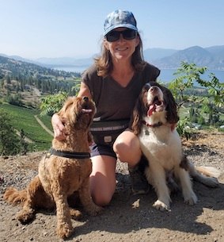

I am looking to work as a Web Developer
I am a student on Web Developer Boot CampI am a qualified Solicitor and Barrister
My background is as a criminal lawyer and not technology, however they both require an attention to detail and organisation skills.
An important element of my job was listening to the various parties, to grasp what they understood of the process, and what they hoped to achieve.
As a Web Developer, understanding what the client's wants and understands, will be a key component of the job
I grew up in northern BC, and left to start university in Vancouver. I then left and moved the UK
I returned to education and completed a law degree, then qualified as a barrister.
I returned to Canada where i qualified as a lawyer there but returned to the UK within 3 years
I practised for a number of years before stopping work to concentrate on my sons' education
I have done voluntary work in the community in various forms
| Company | Contact Name | |
|---|---|---|
| Share & Repair Cafe | Esther Gardiner | Contact details |
| Company Name | Personal Name | Contact Details |